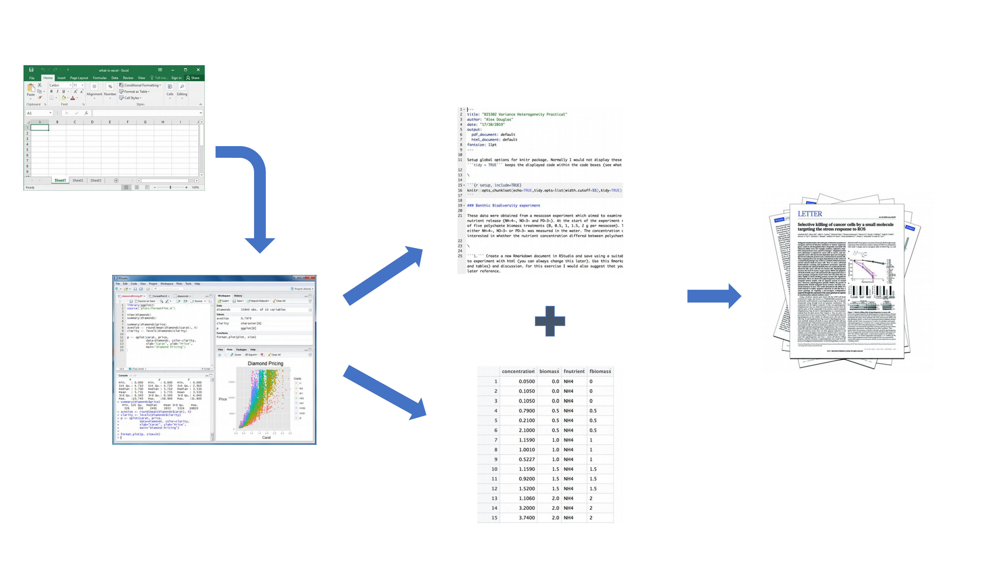
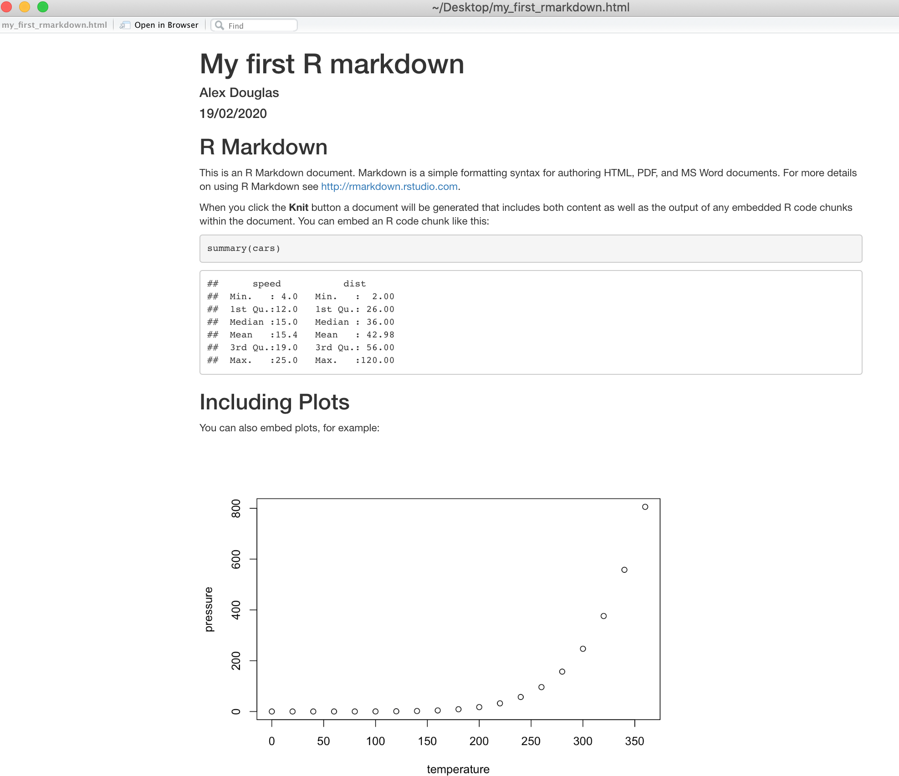
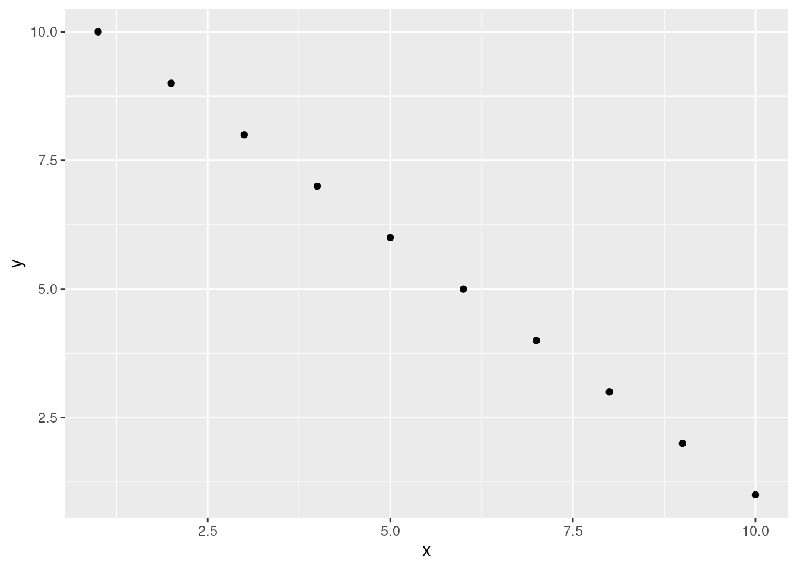

6 Rapports reproductibles avec Quarto
Avertissement
les captures d’écran sont encore avec R markdown sera bientôt mis à jour
Ce chapitre vous présente la création de rapports reproductibles en utilisant R markdown / Quarto afin d’encourager les bonnes (ou meilleures) pratiques pour faciliter la science ouverte. Il décrira d’abord ce que sont R markdown et Quarto et pourquoi vous pourriez envisager de les utiliser, puis comment créer un document Quarto à l’aide de RStudio et enfin comment convertir ce document en un rapport au format html ou pdf. Au cours de ce chapitre, vous apprendrez :
- les différents composants d’un document Quarto
- comment formater le texte, les graphiques et les tableaux dans le document
- comment éviter certaines des difficultés les plus courantes lors de l’utilisation de Quarto.
6.1 Qu’est-ce que R markdown / Quarto ?
6.1.1 R Markdown
R markdown est un langage de texte simple et facile à utiliser pour combiner votre code R, les résultats de votre analyse de données (y compris les graphiques et les tableaux) et vos commentaires écrits dans un document unique, bien formaté et reproductible (comme un rapport, une publication, un chapitre de thèse ou une page web comme celle-ci).
Techniquement, R markdown est une combinaison de trois langages, R, Markdown et YAML (un autre langage de balisage). Markdown et YAML sont tous deux un type de langage de balisage. Un langage de balisage permet simplement de créer un fichier de texte brut facile à lire, qui peut contenir du texte formaté, des images, des en-têtes et des liens vers d’autres documents. Si vous êtes intéressé, vous pouvez trouver plus d’informations sur les langages de balisage [ici][balisage] . En fait, vous êtes exposé à un langage de balisage tous les jours, car la plupart des contenus Internet que vous digérez quotidiennement sont étayés par un langage de balisage appelé HTML (Hypertext Markup Language). Quoi qu’il en soit, le point principal est que R markdown est très facile à apprendre (beaucoup, beaucoup plus facile que HTML) et lorsqu’il est utilisé avec un bon IDE (RStudio ou VS Code), il est ridiculement facile à intégrer dans votre flux de travail pour produire un contenu riche en fonctionnalités (alors pourquoi ne le feriez-vous pas ?!).
6.1.2 Quarto ?
Quarto est une version multilingue de la nouvelle g√©n√©ration de R Markdown de Posit, avec de nombreuses nouvelles fonctionnalit√©s et capacit√©s, compatible non seulement avec R mais aussi avec d‚Äôautres langages comme Python et Julia. Comme R Markdown, Quarto utilise knitr üì¶ package pour ex√©cuter le code R, et est donc capable de rendre la plupart des codes R existants. .Rmd existants sans modification. Cependant, il s‚Äôaccompagne √©galement d‚Äôune pl√©thore de nouvelles fonctionnalit√©s. Plus important encore, il facilite grandement la cr√©ation de diff√©rents types de sorties puisque le codage est homog√©n√©is√© pour un format sp√©cifique sans avoir √† se fier √† diff√©rents paquets r ayant chacun leurs propres sp√©cificit√©s (Par exemple bookdown, hugodown, blogdown, thesisdown, rticles, xaringan, ‚Ķ).
Dans la suite de ce chapitre, nous parlerons de Quarto mais beaucoup de choses peuvent être faites avec R markdown. Quarto utilise .qmd alors que R markdown fonctionne avec des fichiers .Rmd mais Quarto peut rendre .Rmd également.
6.2 Pourquoi utiliser Quarto ?
Au cours des chapitres précédents, nous avons beaucoup parlé de la nécessité de mener vos recherches de manière robuste et reproductible afin de faciliter la science ouverte. En résumé, la science ouverte consiste à faire tout ce qui est en notre pouvoir pour rendre nos données, nos méthodes, nos résultats et nos conclusions transparents et accessibles à tous. Certains des principaux principes de la science ouverte sont décrits ici et comprennent
- Transparence de la méthodologie expérimentale, de l’observation, de la collecte des données et des méthodes d’analyse.
- Disponibilité publique et réutilisation des données scientifiques
- Accessibilité au public et transparence de la communication scientifique
- Utilisation d’outils en ligne pour faciliter la collaboration scientifique
À l’heure actuelle, vous utilisez tous (avec un peu de chance) R pour explorer et analyser vos données intéressantes. En tant que tel, vous êtes déjà bien avancé dans votre démarche visant à rendre votre analyse plus reproductible, plus transparente et plus facile à partager. Cependant, il se peut que votre flux de travail actuel ressemble à ceci :
Vos données sont importées dans R à partir de votre tableur préféré, vous écrivez votre code R pour explorer et analyser vos données, vous enregistrez les tracés sous forme de fichiers externes, vous copiez les tableaux des résultats d’analyse, puis vous combinez manuellement tous ces éléments et votre prose écrite dans un seul document MS Word (peut-être pour un article ou un chapitre de thèse). Bien qu’il n’y ait rien de particulièrement mauvais dans cette approche (et qu’elle soit certainement meilleure que l’utilisation d’un logiciel “pointer-cliquer” pour analyser vos données), elle présente certaines limites :
Elle n’est pas particulièrement reproductible. Parce que ce flux de travail sépare votre code R du document final, il y a de multiples occasions de prendre des décisions non documentées (quels graphiques avez-vous utilisés ? quelles analyses avez-vous incluses ou non ? etc.)
Il est inefficace. Si vous devez revenir en arrière et modifier quelque chose (créer un nouveau graphique ou mettre à jour votre analyse, etc.), vous devrez créer ou modifier plusieurs documents, ce qui augmente le risque que des erreurs se glissent dans votre flux de travail.
Il est difficile à maintenir. Si votre analyse change, vous devrez à nouveau mettre à jour plusieurs fichiers et documents.
Il peut être difficile de décider ce qui doit être partagé avec d’autres. Partagez-vous l’ensemble de votre code (exploration initiale des données, validation du modèle, etc.) ou seulement le code spécifique à votre document final ? Il est assez courant (et mauvais !) pour les chercheurs de maintenir deux scripts R, l’un utilisé pour l’analyse proprement dite et l’autre à partager avec le document final ou le chapitre de la thèse. Cela peut prendre du temps et prêter à confusion et devrait être évité.
Un flux de travail plus efficace et plus robuste pourrait ressembler à ceci :

Vos données sont importées dans R comme précédemment, mais cette fois-ci, tout le code R que vous avez utilisé pour analyser vos données, produire vos graphiques et votre texte écrit (Introduction, Matériel et Méthodes, Discussion, etc.) est contenu dans un seul document Quarto qui est ensuite utilisé (avec vos données) pour créer automatiquement votre document final. C’est exactement ce que Quarto vous permet de faire.
Voici quelques-uns des avantages de l’utilisation de Quarto :
Il relie explicitement vos données à votre code R et à vos résultats, créant ainsi un flux de travail entièrement reproductible. TOUT du code R utilisé pour explorer, résumer et analyser vos données peut être inclus dans un seul document facile à lire. Vous pouvez décider de ce que vous voulez inclure dans votre document final (comme vous l’apprendrez ci-dessous), mais tout votre code R peut être inclus dans le document Quarto.
Vous pouvez créer une grande variété de formats de sortie (pdf, pages web html, MS Word et bien d’autres) à partir d’un seul document Quarto, ce qui améliore à la fois la collaboration et la communication.
Améliore la transparence de votre recherche. Vos données et votre fichier Quarto peuvent être joints à votre publication ou au chapitre de votre thèse en tant que matériel supplémentaire ou être hébergés sur un dépôt GitHub (voir Chapitre 7).
Augmente l’efficacité de votre flux de travail. Si vous avez besoin de modifier ou d’étendre votre analyse actuelle, il vous suffit de mettre à jour votre document Quarto et ces changements seront automatiquement inclus dans votre document final.
6.3 Commencer avec Quarto
Quarto s’intègre très bien avec R Studio et VS Code et fournissent à la fois un éditeur de source et un éditeur visuel offrant une expérience proche de votre logiciel d’écriture classique WYSIWYG (ce que vous voyez est ce que vous écrivez) (par exemple Microsoft Word ou LibreOffice writer).
6.3.1 Installation de la solution
Pour utiliser Quarto, vous devez d‚Äôabord installer le logiciel Quarto et le logiciel quarto üì¶ (avec ses d√©pendances). Vous trouverez des instructions sur la fa√ßon de proc√©der dans Section 1.1.1 et sur le site web de Quarto. Si vous souhaitez cr√©er des documents PDF (ou des documents MS Word) √† partir de votre fichier Quarto, vous devrez √©galement installer une version de {{< latex >}} sur votre ordinateur. Si vous n‚Äôavez pas install√© {{< latex >} }, nous vous recommandons d‚Äôinstaller TinyTeX . L√† encore, des instructions sur la mani√®re de proc√©der sont disponibles √† l‚Äôadresse suivante : Section 1.1.1.
6.3.2 Créez un document Quarto, .qmd
Il est temps de créer votre premier document Quarto. Dans RStudio, cliquez sur le menu File -> New File -> Quarto.... Dans la fenêtre qui s’ouvre, donnez un “titre” au document, saisissez les informations relatives à l’“auteur” (votre nom) et sélectionnez HTML comme format de sortie par défaut. Nous pourrons modifier tout cela ultérieurement, ne vous en préoccupez donc pas pour l’instant.

Vous remarquerez que lorsque votre nouveau document Quarto est créé, il comprend un exemple de code Quarto. Normalement, vous devriez surligner et supprimer tout ce qui se trouve dans le document, à l’exception de l’information située en haut, entre les boutons --- (c’est ce qu’on appelle l’en-tête YAML dont nous parlerons dans un instant) et commencer à écrire votre propre code. Cependant, pour l’instant, nous allons utiliser ce document pour nous entraîner à convertir Quarto aux formats html et pdf et vérifier que tout fonctionne.

Une fois que vous avez créé votre document Quarto, c’est une bonne pratique de sauvegarder ce fichier dans un endroit pratique (Section 1.4 et Figure 1.11). Vous pouvez le faire en sélectionnant File -> Save dans le menu de RStudio (ou utilisez le raccourci clavier ctrl + s sous Windows ou cmd + s sur Mac) et entrez un nom de fichier approprié (appelez-le par exemple my_first_quarto). Notez que l’extension de votre nouveau fichier Quarto est .qmd.
Maintenant, pour convertir votre fichier .qmd en document HTML, cliquez sur le petit triangle noir à côté de l’icône Knit en haut de la fenêtre source et sélectionnez knit to HTML

RStudio va maintenant “tricoter” (ou rendre) votre fichier .qmd en un fichier HTML. Remarquez qu’il y a un nouveau Quarto dans votre fenêtre de console, qui vous fournit des informations sur le processus de rendu et affiche également les erreurs si quelque chose ne va pas.
Si tout s’est déroulé sans problème, un nouveau fichier HTML a été créé et enregistré dans le même répertoire que votre fichier .qmd (le nôtre s’appellera my_first_quarto.html). Pour visualiser ce document, il suffit de double-cliquer sur le fichier pour l’ouvrir dans un navigateur (comme Chrome ou Firefox) et afficher le contenu rendu. RStudio affichera également un aperçu du fichier rendu dans une nouvelle fenêtre pour que vous puissiez le vérifier (votre fenêtre peut être légèrement différente si vous utilisez un ordinateur Windows).

Vous venez de rendre votre premier document Quarto. Si vous souhaitez tricoter votre .qmd en un document pdf, il vous suffit de choisir knit to PDF au lieu de knit to HTML lorsque vous cliquez sur le bouton knit l’icône Cela créera un fichier appelé my_first_quarto.pdf que vous pouvez ouvrir en double-cliquant dessus. Essayez-le !
Vous pouvez √©galement tricoter un .qmd en utilisant la ligne de commande dans la console plut√¥t qu‚Äôen cliquant sur l‚Äôic√¥ne de tricotage. Pour ce faire, il suffit d‚Äôutiliser la commande quarto_render() de la fonction quarto üì¶ package, comme indiqu√© ci-dessous. L√† encore, vous pouvez modifier le format de sortie √† l‚Äôaide de la fonction output_format = ainsi que de nombreuses autres options.
library(quarto)
quarto_render('my_first_quarto.qmd', output_format = 'html_document')
# alternatively if you don't want to load the quarto package
quarto::quarto_render('my_first_quarto.Rmd', output_format = 'html_document')6.4 Anatomie du document Quarto (.qmd)
Maintenant que vous pouvez rendre un fichier Quarto dans RStudio aux formats HTML et PDF, examinons de plus près les différents composants d’un document Quarto typique. Normalement, chaque document Quarto est composé de 3 éléments principaux :
- un en-tête YAML
- texte formaté
- des morceaux de code.

6.4.1 En-tête YAML
YAML signifie ’YAML Ain’t Markup L anguage” (c’est une blague “in”) [plaisanterie][blague] !) et ce composant optionnel contient les métadonnées et les options pour l’ensemble du document comme le nom de l’auteur, la date, le format de sortie, etc. L’en-tête YAML est entouré avant et après d’une balise --- sur sa propre ligne. Dans RStudio, un en-tête YAML minimal est automatiquement créé pour vous lorsque vous créez un nouveau document Quarto comme nous l’avons fait ci-dessus (Section 6.3.2), mais vous pouvez le modifier à tout moment. Un en-tête YAML simple peut ressembler à ceci :
---
title: My first Quarto document
author: Jane Doe
date: March 01, 2020
format: html
---Dans l’en-tête YAML ci-dessus, le format de sortie est défini sur HTML. Si vous souhaitez changer le format de sortie au format pdf, vous pouvez le changer de format: html à format: pdf (vous pouvez également définir plusieurs formats de sortie si vous le souhaitez). Vous pouvez également modifier la police et la taille de police par défaut pour l’ensemble du document et même inclure des options fantaisistes telles qu’une table des matières, des références en ligne et une bibliographie. Si vous souhaitez explorer la pléthore d’autres options, voir ici . Attention, la plupart des options que vous pouvez spécifier dans l’en-tête YAML fonctionneront avec les documents au format HTML et PDF, mais pas toutes. Si vous avez besoin de plusieurs formats de sortie pour votre document Quarto, vérifiez si vos options YAML sont compatibles avec ces formats. De plus, l’indentation dans l’en-tête YAML a une signification, soyez donc prudent lorsque vous alignez du texte. Par exemple, si vous souhaitez inclure une table des matières, vous devez modifier l’option output: dans l’en-tête YAML comme suit
---
title: My first Quarto document
author: Bob Hette
date: March 01, 2020
format:
html:
toc: true
---6.4.2 Texte formaté
Comme mentionné ci-dessus, l’un des avantages de Quarto est que vous n’avez pas besoin de votre traitement de texte pour rassembler votre code R, votre analyse et votre écriture. Quarto est capable de restituer (presque) tout le formatage de texte dont vous pourriez avoir besoin, comme l’italique, le gras, le barré, l’indice supérieur et l’indice inférieur, ainsi que les listes à puces et numérotées, les en-têtes et les pieds de page, les images, les liens vers d’autres documents ou pages web, et aussi les équations. Cependant, contrairement à ce que vous connaissez, le Ce que vous voyez, c’est ce que vous obtenez ( WYSIWYG ), vous ne voyez pas le texte formaté final dans votre document Quarto (comme vous le feriez avec MS Word), mais vous devez “baliser” le formatage de votre texte pour qu’il soit rendu dans votre document de sortie. À première vue, cela peut sembler une véritable plaie, mais c’est en fait très facile à faire et cela présente de nombreux avantages. avantages (passez-vous plus de temps à embellir votre texte dans MS Word qu’à rédiger un contenu de qualité ?)
Voici un exemple de marquage du formatage du texte dans un document Quarto
#### Tadpole sediment experiment
These data were obtained from a mesocosm experiment which aimed to examine the
effect of bullfrog tadpoles (*Lithobates catesbeianus*) biomass on sediment
nutrient (NH~4~, NO~3~ and PO~3~) release.
At the start of the experiment 15 replicate mesocosms were filled with
20 cm^2^ of **homogenised** marine sediment and assigned to one of five
tadpole biomass treatments.qui ressemblerait à ceci dans le document rendu final (pouvez-vous repérer les marques ?)
Expérience de sédimentation sur les têtards
Ces données proviennent d’une expérience en mésocosme qui visait à examiner les effets de la sédimentation sur les têtards. l’effet des têtards de grenouille-taureau (Lithobates catesbeianus) sur les sédiments nutriments (NH
4NO3et PO3). Au début de l’expérience, 15 mésocosmes répétés ont été remplis de 20 cm2 de homogénéisé sédiments marins homogénéisés et classés dans l’une des cinq catégories suivantes biomasse de têtards.
L’accent est mis
La syntaxe markdown la plus courante pour mettre en valeur et formater du texte est présentée ci-dessous.
| Objectif | Quarto | production |
|---|---|---|
| texte en gras | **mytext** |
mon texte |
| texte en italique | *mytext* |
mon texte |
| barré | ~~mytext~~ |
|
| exposant | mytext^2^ |
mon texte2 |
| indice | mytext~2~ |
mon texte |
Il est intéressant de noter qu’il n’y a pas de soulignement par défaut dans la syntaxe de R markdown, pour des raisons plus ou moins ésotériques (par exemple. un soulignement est considéré comme un élément stylistique (il peut y avoir d’autres raisons). [raisons][souligner] )). Quarto a corrigé ce problème, vous pouvez simplement faire [text to underline]{.underline} pour souligner votre texte.
Espaces blancs et sauts de ligne
L’une des choses qui peut être déroutante pour les nouveaux utilisateurs de markdown est l’utilisation des espaces et des retours à la ligne (la touche Entrée de votre clavier). En markdown, les espaces multiples dans le texte sont généralement ignorés, tout comme les retours à la ligne. Par exemple, ce texte en markdown
These data were obtained from a
mesocosm experiment which aimed to examine the
effect
of bullfrog tadpoles (*Lithobates catesbeianus*) biomass.sera rendu sous la forme
Ces données ont été obtenues à partir d’un expérience en mésocosme qui visait à examiner l’impact de l’utilisation de l’eau sur la santé. l’effet des têtards de grenouille-taureau (Lithobates catesbeianus) biomasse.
C’est généralement une bonne chose (plus d’espaces multiples aléatoires dans votre texte). Si vous voulez que votre texte commence sur une nouvelle ligne, vous pouvez simplement ajouter deux espaces vides à la fin de la ligne précédente.
Ces données ont été obtenues à partir d’un
expérience en mésocosme qui visait à examiner l’impact de l’utilisation de l’eau sur la qualité de l’air.
effet des têtards de grenouille-taureau (Lithobates catesbeianus).
Si vous voulez vraiment des espaces multiples dans votre texte, vous pouvez utiliser la fonction Nsur breaking space tag
These data were obtained from a
mesocosm experiment which aimed to examine the
effect bullfrog tadpoles (*Lithobates catesbeianus*) biomass.Ces données ont été obtenues à partir d’un
d’une expérience en mésocosme qui visait à examiner l’impact de l’utilisation de l’eau sur la santé.
effet des têtards de grenouille-taureau (Lithobates catesbeianus).
Rubriques
Vous pouvez ajouter des titres et des sous-titres à votre document Quarto en utilisant la fonction # en début de ligne. Vous pouvez réduire la taille des titres en ajoutant simplement plus de # symboles. Par exemple, il est possible de réduire la taille des titres en ajoutant simplement des symboles supplémentaires.
# Header 1
## Header 2
### Header 3
#### Header 4
##### Header 5
###### Header 6permet d’obtenir des titres par ordre de taille décroissante
En-tête 1
En-tête 2
En-tête 3
En-tête 4
En-tête 5
En-tête 6
Commentaires
Comme vous pouvez le voir ci-dessus, la signification de la # est différente lorsqu’il s’agit de formater du texte dans un document Quarto par rapport à un script R standard (qui est utilisé pour inclure un commentaire - vous vous souvenez ?!). Vous pouvez cependant utiliser un # pour commenter du code à l’intérieur d’un morceau de code (Section 6.4.3) comme d’habitude (plus d’informations à ce sujet dans un instant). Si vous souhaitez inclure un commentaire dans votre document Quarto en dehors d’un morceau de code qui ne sera pas inclus dans le document rendu final, placez votre commentaire entre les symboles <!-- et -->.
<!--
this is an example of how to format a comment using Quarto.
-->Listes
Si vous souhaitez créer une liste de texte à puces, vous pouvez mettre en forme une liste non ordonnée avec des sous-éléments. Notez que les sous-éléments doivent être indentés.
- item 1
- item 2
+ sub-item 2
+ sub-item 3
- item 3
- item 4
- élément 1
- point 2
- sous-poste 2
- sous-poste 3
- point 3
- point 4
Si vous avez besoin d’une liste ordonnée
1. item 1
1. item 2
+ sub-item 2
+ sub-item 3
1. item 3
1. item 4
- article 1
- point 2
- sous-poste 2
- sous-poste 3
- point 3
- point 4
Liens
Outre les images, vous pouvez également inclure des liens vers des pages web ou d’autres liens dans votre document. Utilisez la syntaxe suivante pour créer un lien cliquable vers une page web existante. Le texte du lien est placé entre les crochets et l’URL de la page web entre les crochets ronds immédiatement après.
You can include a text for your clickable [link](https://www.worldwildlife.org)qui vous donne :
Vous pouvez inclure un texte pour votre lien cliquable cliquable
6.4.3 Morceaux de code
Venons-en maintenant au cœur du problème. Pour inclure du code R dans votre document Quarto, il vous suffit de placer votre code dans un “morceau de code”. Tous les morceaux de code commencent et se terminent par trois antisèches ```````````. Remarque : ces signes sont également appelés “accents graves” ou “guillemets arrière” et n’ont rien à voir avec une apostrophe ! Sur la plupart des claviers, vous pouvez [trouver la coche arrière][bâton arrière] sur la même touche que le tilde (~).
```{r}
Any valid R code goes here
```Vous pouvez insérer un morceau de code soit en tapant les délimiteurs du morceau ```{r} et ``````````soit en utilisant l'option de votre IDE (barre d'outils de RStudio (bouton Insérer) ou en cliquant sur le menuCode->Insert Chunk`. Dans VS Code, vous pouvez utiliser des extraits de code). Le mieux est peut-être de se familiariser avec les raccourcis clavier de votre IDE ou de vos extraits de code.
Il y a beaucoup de choses que vous pouvez faire avec des morceaux de code : vous pouvez produire du texte à partir de votre analyse, créer des tableaux et des figures et insérer des images, entre autres choses. À l’intérieur du morceau de code, vous pouvez placer des règles et des arguments entre les accolades. {} qui vous permettent de contrôler l’interprétation de votre code et le rendu des résultats. C’est ce qu’on appelle les options du bloc de code. La seule option obligatoire est le premier argument qui spécifie le langage utilisé (r dans notre cas, mais [d’autres][moteurs] langues sont prises en charge). Remarque : les options de blocs peuvent être écrites de deux manières :
- soit toutes les options de blocs doivent être écrites entre les crochets, sur une seule ligne, sans retour à la ligne. 1. soit elles peuvent être écrites en utilisant une notation YAML à l’intérieur du morceau de code en utilisant
#|au début de la ligne.
Nous utilisons la notation YAML pour les options du bloc de code car nous la trouvons beaucoup plus facile à lire lorsque vous avez plusieurs options de longues légendes.
Vous pouvez √©galement sp√©cifier un nom (ou √©tiquette) facultatif pour le morceau de code, ce qui peut s‚Äôav√©rer utile en cas de probl√®mes de d√©bogage et de rendu avanc√© de documents. Dans le bloc suivant, nous nommons le morceau de code summary-stats, nous chargeons le paquet ggplot2 üì¶ cr√©er un cadre de donn√©es (dataf) avec deux variables x et y, utiliser la m√©thode summary() pour afficher des statistiques sommaires et tracer un nuage de points des donn√©es √† l‚Äôaide de la fonction ggplot(). Lorsque nous ex√©cutons le bloc de code, le code R et la sortie r√©sultante sont affich√©s dans le document final.
```{r, summary-stats, echo = TRUE, fig.cap = "Caption for a simple figure but making the chunk options long and hard to read"}
library(ggplot)
x <- 1:10 # create an x variable
y <- 10:1 # create a y variable
dataf <- data.frame(x = x, y = y)
summary(dataf)
ggplot(dataf, aes(x = x, y = y)) + geom_point()
``````{r}
#| label: summary-stats
#| echo: true
#| fig-cap = "Caption for a simple figure but making the chunk options long and hard to read"
x <- 1:10 # create an x variable
y <- 10:1 # create a y variable
dataf <- data.frame(x = x, y = y)
summary(dataf)
ggplot(dataf, aes(x = x, y = y)) + geom_point()
```Tous deux produiront
x <- 1:10 # create an x variable
y <- 10:1 # create a y variable
dataf <- data.frame(x = x, y = y)
summary(dataf) x y
Min. : 1.00 Min. : 1.00
1st Qu.: 3.25 1st Qu.: 3.25
Median : 5.50 Median : 5.50
Mean : 5.50 Mean : 5.50
3rd Qu.: 7.75 3rd Qu.: 7.75
Max. :10.00 Max. :10.00 ggplot(dataf, aes(x = x, y = y)) + geom_point()

Lorsque vous utilisez des noms de morceaux, assurez-vous que vous n’avez pas de noms de morceaux en double dans votre document Quarto et évitez les espaces et les points, car cela posera des problèmes lorsque vous devrez tricoter votre document. - pour séparer les mots dans nos noms de blocs).
Si nous voulons afficher uniquement la sortie de notre code R (juste les statistiques sommaires par exemple) et non le code lui-même dans notre document final, nous pouvons utiliser l’option chunk. echo=FALSE
```{r}
#| label: summary-stats2
#| echo: false
x <- 1:10 # create an x variable
y <- 10:1 # create a y variable
dataf <- data.frame(x = x, y = y)
summary(dataf)
``` x y
Min. : 1.00 Min. : 1.00
1st Qu.: 3.25 1st Qu.: 3.25
Median : 5.50 Median : 5.50
Mean : 5.50 Mean : 5.50
3rd Qu.: 7.75 3rd Qu.: 7.75
Max. :10.00 Max. :10.00 Pour afficher le code R mais pas la sortie, utilisez l’option results='hide' l’option chunk.
```{r}
#| label: summary-stats
#| results: 'hide'
x <- 1:10 # create an x variable
y <- 10:1 # create a y variable
dataf <- data.frame(x = x, y = y)
summary(dataf)
```x <- 1:10 # create an x variable
y <- 10:1 # create a y variable
dataf <- data.frame(x = x, y = y)
summary(dataf)Il peut arriver que vous souhaitiez exécuter un morceau de code sans afficher aucune sortie. Vous pouvez supprimer la totalité de la sortie en utilisant l’option chunk include: false.
```{r}
#| label: summary-stats4
#| include: false
x <- 1:10 # create an x variable
y <- 10:1 # create a y variable
dataf <- data.frame(x = x, y = y)
summary(dataf)
```Il existe un grand nombre d’options de morceaux documentées ici avec une version plus condensée ici . Les plus couramment utilisées sont résumées ci-dessous, les valeurs par défaut étant indiquées.
| Option d’assemblage | valeur par défaut | Fonction |
|---|---|---|
| écho | echo: true |
Si false n’affichera pas le code dans le document final |
| résultats | results: 'markup' |
Si “cacher”, les résultats du code ne seront pas affichés dans le document final. |
| Si “hold”, l’affichage de tous les éléments de sortie sera retardé jusqu’à la fin du morceau. | ||
| Si ‘asis’, les résultats seront affichés sans être reformatés. |
include |
include: true | Si false exécute le bloc mais ne l’inclut pas dans le document final.eval |
eval: true | Si false n’exécutera pas le code contenu dans le morceau de code.message |
message: true | Si false n’affichera pas les messages générés par le code.avertissement |
warning: true | Si false n’affichera pas les messages d’avertissement générés par le code.6.4.4 Code R en ligne
Jusqu’à présent, nous avons écrit et exécuté notre code R par morceaux. Une autre bonne raison d’utiliser Quarto est que nous pouvons également inclure notre code R directement dans notre texte. C’est ce qu’on appelle le “code en ligne”. Pour inclure votre code dans votre texte Quarto, il vous suffit d’écrire r write your code here. Cela peut s’avérer très utile lorsque vous souhaitez inclure des statistiques sommaires dans votre texte. Par exemple, nous pourrions décrire le iris comme suit :
Morphological characteristics (variable names:
`r names(iris)[1:4]`) were measured from
`r nrow(iris)` *Iris sp.* plants from
`r length(levels(iris$Species))` different species.
The mean Sepal length was
`r round(mean(iris$Sepal.Length), digits = 2)` mm.
qui sera rendu par
Caractéristiques morphologiques (noms de variables : Sepal.Length, Sepal.Width, Petal.Length, Petal.Width) étaient mesurés à partir de 150 l’iris plantes de 3 différentes espèces. La longueur moyenne des sépales était de 5.84 mm.
L’avantage d’inclure du code R en ligne dans votre texte est que ces valeurs seront automatiquement mises à jour si vos données changent.
6.4.5 Images et photos
La possibilité d’intégrer des images et des liens vers des pages web (ou d’autres documents) dans votre document Quarto est une fonctionnalité utile. Vous pouvez inclure des images dans votre document Quarto de différentes manières. La méthode la plus simple est sans doute d’utiliser le format markdown de Quarto :
{options}Voici un exemple avec une image occupant 75 % de la largeur et centrée.
{fig-align="center" width="75%"}résultant en :

Une autre façon d’inclure des images dans votre document est d’utiliser la fonction include_graphics() de la fonction knitr du paquet. Le code suivant produira un résultat similaire.
```{r}
#| label: fig-knitr
#| fig-align: center
#| out-width: 75%
#| fig-cap: Waiting for the eclipse
knitr::include_graphics("images/markdown/eclipse_ready.jpg")
```Le code ci-dessus ne fonctionnera que si le fichier image (eclipse_ready.jpg) se trouve au bon endroit par rapport à l’endroit où vous avez enregistré votre fichier .qmd fichier. Dans l’exemple, le fichier image se trouve dans un sous-répertoire (dossier) appelé images/markdown dans le répertoire où nous avons enregistré notre my_first_quarto.qmd fichier. Vous pouvez intégrer des images enregistrées dans de nombreux types de fichiers différents, mais les plus courants sont les suivants .jpg et .png.
6.4.6 Les chiffres
Par défaut, les figures produites par le code R sont placées immédiatement après le morceau de code à partir duquel elles ont été générées. Par exemple :
```{r}
#| label: fig-simple-plot
#| fig-cap: A simple plot
x <- 1:10 # create an x variable
y <- 10:1 # create a y variable
dataf <- data.frame(x = x, y = y)
plot(dataf$x, dataf$y, xlab = "x axis", ylab = "y axis")
```
Le fichier fig-cap: permet de fournir une légende de figure reconnue par Quarto et utilisée dans la numérotation des figures et les références croisées (Section 6.4.8).
Si vous souhaitez modifier les dimensions de l’intrigue dans le document final, vous pouvez utiliser l’option fig-width: et fig-height: (en pouces !). Vous pouvez également modifier l’alignement de la figure à l’aide de la fonction fig-align: option chunk.
```{r}
#| label: fig-simple-plot2
#| fig-cap: A shrinked figure
#| fig-width: 4
#| fig-height: 3
#| fig-align: center
x <- 1:10 # create an x variable
y <- 10:1 # create a y variable
dataf <- data.frame(x = x, y = y)
plot(dataf$x, dataf$y, xlab = "x axis", ylab = "y axis")
```
Vous pouvez ajouter une légende à la figure à l’aide de la fonction fig-cap: option.
```{r}
#| label: fig-simple-plot-cap
#| class-source: fold-show
#| fig-cap: A simple plot
#| fig-align: center
x <- 1:10 # create an x variable
y <- 10:1 # create a y variable
dataf <- data.frame(x = x, y = y)
plot(dataf$x, dataf$y, xlab = "x axis", ylab = "y axis")
```
Si vous souhaitez supprimer la figure dans le document final, utilisez l’option fig-show: 'hide' pour supprimer la figure dans le document final.
```{r}
#| label: fig-simple-plot5
#| fig-show: hide
x <- 1:10 # create an x variable
y <- 10:1 # create a y variable
dataf <- data.frame(x = x, y = y)
plot(dataf$x, dataf$y, xlab = "x axis", ylab = "y axis")
```Si vous utilisez un logiciel comme ggplot2 üì¶ pour cr√©er vos parcelles, n‚Äôoubliez pas que vous devrez rendre le paquet disponible avec l‚Äôoption library() dans le morceau de code (ou dans un morceau de code pr√©c√©dent).
```{r}
#| label: fig-simple-ggplot
#| fig-cap: A simple ggplot
x <- 1:10 # create an x variable
y <- 10:1 # create a y variable
dataf <- data.frame(x = x, y = y)
library(ggplot2)
ggplot(dataf, aes(x = x, y = y)) +
geom_point()
```
Là encore, il existe un grand nombre d’options spécifiques à la production de graphiques et de figures. Voir ici pour plus de détails.
6.4.7 Tableaux
Dans Quarto, vous pouvez créer des tableaux en utilisant la syntaxe markdown native (il n’est pas nécessaire que ce soit dans un morceau de code).
| x | y |
|:---:|:---:|
| 1 | 5 |
| 2 | 4 |
| 3 | 3 |
| 4 | 2 |
| 5 | 1 |
: Caption for a simple markdown table| x | y |
|---|---|
| 1 | 5 |
| 2 | 4 |
| 3 | 3 |
| 4 | 2 |
| 5 | 1 |
Caption pour un simple tableau markdown {#tbl-simp-md}
Le :-------: indique à markdown que la ligne du dessus doit être traitée comme un en-tête et les lignes du dessous comme le corps du tableau. L’alignement à l’intérieur du tableau est déterminé par la position de la balise :. Pour centrer l’alignement, utilisez :------: pour aligner à gauche :------ et aligner à droite ------:. Bien qu’il puisse être amusant ( !) de créer des tableaux avec des balises brutes, cela n’est pratique que pour les tableaux très petits et très simples.
La fa√ßon la plus simple d‚Äôinclure des tableaux dans un document Quarto est d‚Äôutiliser la fonction kable() de la fonction knitr üì¶ package. La fonction kable() permet de cr√©er des tableaux pour les formats HTML, PDF et Word.
Pour créer un tableau des 2 premières lignes par espèce de l’échantillon iris à l’aide de la fonction kable() il suffit d’écrire
ou sans charger knitr üì¶ mais en indiquant o√π trouver le kable() fonction.
iris %>%
group_by(Species) %>%
slice_head(n = 2) %>%
knitr::kable()| Sepal.Length | Sepal.Width | Petal.Length | Petal.Width | Species |
|---|---|---|---|---|
| 5.1 | 3.5 | 1.4 | 0.2 | setosa |
| 4.9 | 3.0 | 1.4 | 0.2 | setosa |
| 7.0 | 3.2 | 4.7 | 1.4 | versicolor |
| 6.4 | 3.2 | 4.5 | 1.5 | versicolor |
| 6.3 | 3.3 | 6.0 | 2.5 | virginica |
| 5.8 | 2.7 | 5.1 | 1.9 | virginica |
La fonction kable() offre de nombreuses options pour modifier la mise en forme du tableau. Par exemple, si nous voulons arrondir les valeurs numériques à une décimale, utilisez la fonction digits = argument. Pour centrer le contenu du tableau, utilisez align = 'c' et pour fournir des en-têtes de colonne personnalisés, utilisez l’argument col.names = argument. Voir ?knitr::kable pour plus d’informations.
iris %>%
group_by(Species) %>%
slice_head(n = 2) %>%
knitr::kable(
digits=0,
align = 'c',
col.names = c(
'Sepal length', 'Sepal width',
'Petal length', 'Petal width', 'Species'
)
)| Sepal length | Sepal width | Petal length | Petal width | Species |
|---|---|---|---|---|
| 5 | 4 | 1 | 0 | setosa |
| 5 | 3 | 1 | 0 | setosa |
| 7 | 3 | 5 | 1 | versicolor |
| 6 | 3 | 4 | 2 | versicolor |
| 6 | 3 | 6 | 2 | virginica |
| 6 | 3 | 5 | 2 | virginica |
Vous pouvez encore am√©liorer l‚Äôaspect de votre kable tables en utilisant la fonction kableExtra üì¶ package (n‚Äôoubliez pas d‚Äôinstaller le package au pr√©alable !). Voir ici pour plus de d√©tails et un tutoriel utile.
Si vous voulez encore plus de contr√¥le et d‚Äôoptions de personnalisation pour vos tables, jetez un coup d‚Äô≈ìil √† l‚Äôoption gt üì¶ [paquet][gt] . gt est un acronyme pour grammar de tet est bas√© sur un principe similaire pour les tableaux qui sont utilis√©s pour les trac√©s dans ggplot.
iris %>%
group_by(Species) %>%
slice_head(n = 2) %>%
rename_with(~ gsub("([._])", " ", .x)) %>%
gt()| Sepal Length | Sepal Width | Petal Length | Petal Width |
|---|---|---|---|
| setosa | |||
| 5.1 | 3.5 | 1.4 | 0.2 |
| 4.9 | 3.0 | 1.4 | 0.2 |
| versicolor | |||
| 7.0 | 3.2 | 4.7 | 1.4 |
| 6.4 | 3.2 | 4.5 | 1.5 |
| virginica | |||
| 6.3 | 3.3 | 6.0 | 2.5 |
| 5.8 | 2.7 | 5.1 | 1.9 |
Dans la plupart des paquets R développés pour produire des tableaux, il existe des options permettant d’inclure des légendes de tableaux. Cependant, si vous souhaitez ajouter une légende de tableau, nous vous recommandons d’utiliser l’option code chunk dans Quarto tbl-cap: car cela permet des références croisées (Section 6.4.8) et une meilleure intégration dans le document.
```{r}
#| label: tbl-gt-table
#| tbl-cap: A nice gt table
#| echo: true
iris %>%
group_by(Species) %>%
slice_head(n=2) %>%
rename_with(~gsub("([._])", " ", .x)) %>%
gt()
```6.4.8 Références croisées
Les références croisées permettent aux lecteurs de naviguer plus facilement dans votre document en fournissant des références numérotées et des liens hypertextes vers diverses entités telles que les figures et les tableaux. Une fois configurée, la numérotation des tableaux et des figures se fait automatiquement, de sorte qu’il n’est pas nécessaire de renuméroter toutes les figures lorsque vous en ajoutez ou en supprimez une.
Chaque entité pouvant faire l’objet d’une référence croisée nécessite une étiquette (un identifiant unique) précédée d’un type de référence croisée, par exemple #fig-element.
Pour plus de détails, voir le site section sur les références croisées sur le site web de Quarto.
6.4.8.1 Sections du document
Vous pouvez faire des références croisées avec d’autres sections du document. Pour ce faire, vous devez
- définir un identifiant pour la section vers laquelle vous souhaitez établir un lien. L’identifiant doit :
- commencer par #sec-
- en minuscules (figure 6.3)
- n’a pas d’espace, en utilisant
-à la place
- utiliser le
@et l’identifiant pour faire référence à la section
## Cross-referencing sections {#sec-cross-ref-sections}
[...]
As seen before(@sec-cross-ref-sections)6.4.8.2 Images, figures et tableaux
Pour les tableaux, les images et les figures, outre l’identifiant, l’élément doit également être accompagné d’une légende pour que les références croisées fonctionnent.
Le préfixe pour les tableaux est #tbl- et #fig- pour les images et les figures.
Voici un exemple d’image incluse dans un texte en markdown :
{#fig-cute-dog}
See @fig-cute-dog for an illustration.Voir Figure 6.14 pour une illustration.
Pour les figures et les tableaux produits avec des morceaux de code R, il suffit de fournir l’identifiant dans le champ label et la légende également en tant qu’option de bloc.
Voici le code pour une figure et un tableau.
```{r}
#| label: fig-cr-plot
#| fig-cap: A nice figure
x <- 1:10 # create an x variable
y <- 10:1 # create a y variable
dataf <- data.frame(x = x, y = y)
library(ggplot2)
ggplot(dataf, aes(x = x, y = y)) +
geom_point()
```
```{r}
#| label: tbl-cr-table
#| tbl-cap: A nice table
#| warning: false
library(knitr)
kable(iris[1:5,], digits=0, align = 'c', col.names = c('sepal length', 'sepal width', 'petal length', 'petal width', 'species'))
```| sepal length | sepal width | petal length | petal width | species |
|---|---|---|---|---|
| 5 | 4 | 1 | 0 | setosa |
| 5 | 3 | 1 | 0 | setosa |
| 5 | 3 | 1 | 0 | setosa |
| 5 | 3 | 2 | 0 | setosa |
| 5 | 4 | 1 | 0 | setosa |
En utilisant les références croisées, on peut écrire :
Tel que vu sur @fig-cr-plot et @tbl-cr-table …
Pour obtenir :
Comme vu sur Figure 6.15 et Table 6.4 …
6.4.9 Citations et bibliographie
Pour générer des citations et une bibliographie, Quarto a besoin de :
- un document correctement formaté
.qmdformaté - un fichier source bibliographique comprenant toutes les informations pour les citations. Il fonctionne avec une grande variété de formats mais nous suggérons l’utilisation de {{< bibtex >} le format }.
- (optionnel) un fichier CSL qui spécifie le formatage à utiliser lors de la génération des citations et de la bibliographie.
La source bibliographique et le fichier csl (facultatif) sont spécifiés dans l’en-tête yaml sous la forme :
---
title: "My Document"
bibliography: references.bib
csl: ecology.csl
---6.4.9.1 Citations
Quarto utilise la représentation markdown standard de Pandoc pour les citations (par ex. [@citation]) - les citations sont placées entre crochets et séparées par des points-virgules. Chaque citation doit avoir une clé, composée de ‘@’ + l’identifiant de la base de données, et peut optionnellement avoir un préfixe, un localisateur, et un suffixe. La clé de la citation doit commencer par une lettre, un chiffre ou , et peut contenir des caractères alphanumériques, et des caractères de ponctuation internes.
| Format Markdown | Sortie (default) |
|---|---|
Les licornes sont les meilleures [voir @martin1219, pp. 33-35 ; aussi @martin2200, chap. 1] |
Les licornes sont les meilleures (voir Martin 1219, pp. 33-35, aussi Martin 2200 chap. 1) |
Les licornes sont les meilleures [@martin2200 ; @martin1219] |
Les licornes sont les meilleures (Martin 1219, 2200) |
Martin dit que les licornes sont les meilleures [-@martin2200] |
Martin dit que les licornes sont les meilleures (2200) |
@martin1219 dit que les licornes sont les meilleures. |
Martin (1219) dit que les licornes sont les meilleures. |
@martin1219 [p. 33] dit que les licornes sont ce qu’il y a de mieux. |
La plupart des gens disent que les licornes sont ce qu’il y a de mieux. |
6.4.9.2 Créer la bibliographie
Par défaut, la liste des ouvrages cités sera automatiquement générée et placée en fin de document si le style l’exige. Elle sera placée dans une div avec l’id refs s’il y en a une comme
### Bibliography
::: {#refs}
:::Pour plus de détails, voir le site page Citation sur le site de Quarto.
6.4.9.3 Intégration avec Zotero
Quarto s’intègre très bien avec Zotero si vous utilisez l’éditeur visuel de RStudio ou VS Code.
6.5 Quelques conseils et astuces
Problème :
Lors du rendu de mon document Quarto au format pdf, mon code sort du bord de la page.
Solution :
Ajoutez un argument global_options au début de votre fichier .qmd dans un morceau de code :
```{r}
#| label: global_options
#| include: false
knitr::opts_chunk$set(message=FALSE, tidy.opts=list(width.cutoff=60), tidy=TRUE)
```Ce morceau de code ne sera pas affiché dans le document final en raison de l’argument global_options. include: false et vous devez placer le morceau de code immédiatement après l’en-tête YAML pour affecter tout ce qui se trouve en dessous.
tidy.opts = list(width.cutoff = 60), tidy=TRUE définit le point de coupure de la marge et fait passer le texte à la ligne suivante. Jouez avec cette valeur pour l’obtenir correctement (60-80 devrait convenir à la plupart des documents).
Avec quarto, vous pouvez également utiliser la fonction globale knitr dans un fichier knitrdans l’en-tête YAML (voir Site web de Quarto pour plus de détails).
---
title: "My Document"
format: html
knitr:
opts_chunk:
message: false
tidy.opts: !expr 'list(width.cutoff=60)'
tidy: true
---Problème :
Lorsque je charge un paquet dans mon document Quarto, le rendu contient tous les messages de démarrage et/ou les avertissements.
Solution :
Vous pouvez charger tous vos paquets au début de votre document Quarto dans un morceau de code en même temps que vous définissez vos options globales.
```{r}
#| label: global_options
#| include: false
knitr::opts_chunk$set(
message = FALSE,
warning=FALSE,
tidy.opts=list(width.cutoff=60)
)
suppressPackageStartupMessages(library(ggplot2))
```L‚Äôoption message = FALSE et warning = FALSE suppriment les messages et les avertissements. Les suppressPackageStartupMessages(library(ggplot2)) chargera le fichier ggplot2 üì¶ mais supprimera les messages de d√©marrage.
Le problème est le suivant :
Lors de la conversion de mon document Quarto en PDF, mes tableaux et/ou figures sont répartis sur deux pages.
Solution :
Ajoutez un saut de page à l’aide de la fonction {{< latex >}} \pagebreak avant le tableau ou la figure incriminé(e)
problème :
Le code dans mon document rendu est laid !
Solution :
Ajouter l’argument tidy: true à vos arguments globaux. Cependant, cela peut parfois poser des problèmes, notamment en ce qui concerne l’indentation du code. La meilleure solution est d’écrire un code qui a de l’allure (insérer des espaces et utiliser plusieurs lignes)
6.6 Informations complémentaires
Bien que nous ayons couvert plus qu’il n’en faut pour vous permettre d’aller loin avec Quarto, nous n’avons eu le temps que d’effleurer la surface, comme c’est le cas pour la plupart des choses liées aux technologies de l’information et de la communication. Heureusement, il existe une mine d’informations à votre disposition si vous souhaitez approfondir vos connaissances et votre expérience. Un bon point de départ est l’excellent site web de Quarto ici.
Un autre guide de référence Quarto utile et concis peut être trouvé ici
Une feuille de calcul rapide et facile pour R Markdown de R Markdown
6.7 Pratique
Nous allons créer un nouveau document Rmarkdown et l’éditer en utilisant les fonctions de base de Rmarkdown. R et Rmarkdown et les fonctions
6.7.1 Le contexte
Nous utiliserons l‚Äôawesome palmerpenguins jeu de donn√©es üêß pour explorer et visualiser les donn√©es.
Ces données ont été collectées et partagées par Dr. Kristen Gorman et Station Palmer, Antarctique LTER.
L’ensemble a été conçu par les Drs Allison Horst et Alison Hill. site officiel.
Le paquet palmerpenguins comporte deux ensembles de données :
-
penguins_rawa les données brutes des observations des manchots (voir?penguins_rawpour plus d’informations) -
penguinsest une version simplifiée des données brutes (voir?penguinspour plus d’informations)
Pour cet exercice, nous allons utiliser la fonction penguins jeu de données.
library(palmerpenguins)
head(penguins)# A tibble: 6 × 8
species island bill_length_mm bill_depth_mm flipper_length_mm body_mass_g
<fct> <fct> <dbl> <dbl> <int> <int>
1 Adelie Torgersen 39.1 18.7 181 3750
2 Adelie Torgersen 39.5 17.4 186 3800
3 Adelie Torgersen 40.3 18 195 3250
4 Adelie Torgersen NA NA NA NA
5 Adelie Torgersen 36.7 19.3 193 3450
6 Adelie Torgersen 39.3 20.6 190 3650
# ℹ 2 more variables: sex <fct>, year <int>6.7.2 Questions
1) Installer le paquet palmerpenguins.
Solution
install.packages("palmerpenguins")2)
- Créez un nouveau document Quarto, nommez-le et enregistrez-le.
- Supprimez tout ce qui se trouve après la ligne 12.
- Ajouter un nouveau titre de section, un texte simple et un texte en caractères gras.
- Compiler (“Tricoter”).
3)
- Ajoutez un morceau dans lequel vous chargez le
palmerpenguins. La ligne de code correspondante devrait être cachée dans la sortie. - Chargez également le fichier
tidyversede paquets. Modifier les valeurs par défaut pour supprimer tous les messages.
Solution
```{r}
#| echo: false
#| message:false
library(palmerpenguins)
library(tidyverse)
```4) Ajoutez un autre morceau dans lequel vous construisez un tableau avec les 10 premières lignes de l’ensemble de données.
Solution
```{r}
penguins %>%
slice(1:10) %>%
knitr::kable()
```5) Dans une nouvelle section, affichez le nombre d‚Äôindividus, d‚Äôesp√®ces de manchots et d‚Äô√Æles que nous avons dans l‚Äôensemble de donn√©es. Cette information doit appara√Ætre directement dans le texte, vous devez utiliser du code en ligne. üòÑ. Calculer la moyenne des traits (num√©riques) mesur√©s sur les manchots.
Solution
## Numerical exploration
There are `r nrow(penguins)` penguins in the dataset,
and `r length(unique(penguins$species))` different species.
The data were collected in `r length(unique(penguins$island))`
islands of the Palmer archipelago in Antarctica.
The mean of all traits that were measured on the penguins are:```{r}
#| echo: false
penguins %>%
group_by(species) %>%
summarize(across(where(is.numeric), mean, na.rm = TRUE))
```6) Dans une autre section, intitulée “Exploration graphique”, construisez une figure avec 3 histogrammes superposés, chacun correspondant à la masse corporelle d’une espèce.
Solution
## Graphical exploration
A histogram of body mass per species:```{r}
#| fig-cap: Distribution of body mass by species of penguins
ggplot(data = penguins) +
aes(x = body_mass_g) +
geom_histogram(aes(fill = species),
alpha = 0.5,
position = "identity") +
scale_fill_manual(values = c("darkorange","purple","cyan4")) +
theme_minimal() +
labs(x = "Body mass (g)",
y = "Frequency",
title = "Penguin body mass")
```7) Dans une autre section, intitulée Régression linéaire Ajustez un modèle de la longueur du bec en fonction de la taille du corps (longueur des nageoires), de la masse corporelle et du sexe. Obtenez le résultat et évaluez graphiquement les hypothèses du modèle. Pour rappel, voici comment effectuer une régression linéaire.
```{r}
model <- lm(Y ~ X1 + X2, data = data)
summary(model)
plot(model)
```
Solution
## Linear regression
And here is a nice model with graphical output```{r}
#| fig-cap: "Checking assumptions of the model"
m1 <- lm(bill_length_mm ~ flipper_length_mm + body_mass_g + sex, data = penguins)
summary(m1)
par(mfrow= c(2,2))
plot(m1)
```8) Ajouter des références manuellement ou à l’aide de citr dans RStudio.
- Choisissez une publication récente du chercheur qui a partagé les données, le Dr Kristen Gorman. Importez cette publication dans votre gestionnaire de références favori (nous utilisons Zotero, sans complexe), et créez une référence bibtex que vous ajouterez au fichier
mabiblio.bib. - Ajouter
bibliography: mabiblio.bibau début de votre document R Markdown (YAML). - Citez la référence dans le texte en la tapant manuellement ou en utilisant la commande
citr. Pour utilisercitrinstallez-le d‚Äôabord ; si tout se passe bien, vous devriez le voir appara√Ætre dans le menu d√©roulantAddinsüí™. Il suffit ensuite d‚ÄôutiliserInsert citationsdans le menu d√©roulantAddins. - Compiler.
9) Changez le format de citation par défaut (style Chicago) en format The American Naturalist. Il se trouve ici https://www.zotero.org/styles. Pour ce faire, ajoutez csl: the-american-naturalist.csl dans le YAML.
10) Cr√©ez votre rapport au format html, pdf et docx. üéâ
Exemple de résultats
Vous pouvez voir un exemple de la sortie fichier source Rmarkdown et sortie pdf

A. C. Davison, and D. V. Hinkley. 1997. Bootstrap methods and their
applications. Cambridge University Press, Cambridge.
Adler, D., S. T. Kelly, T. Elliott, and J. Adamson. 2024. vioplot: Violin plot.
Allaire, J., Y. Xie, C. Dervieux, J. McPherson, J. Luraschi, K. Ushey,
A. Atkins, H. Wickham, J. Cheng, W. Chang, and R. Iannone. 2024. rmarkdown: Dynamic documents for r.
Angelo Canty, and B. D. Ripley. 2024. boot:
Bootstrap r (s-plus) functions.
Bartoń, K. 2024. MuMIn:
Multi-model inference.
Bates, D., M. Mächler, B. Bolker, and S. Walker. 2015. Fitting linear
mixed-effects models using lme4. Journal
of Statistical Software 67:1–48.
Champely, S. 2020. pwr: Basic functions for power analysis.
Douglas, A. 2023. An introduction to
r.
Fox, J. 2003. Effect
displays in R for generalised linear models. Journal of
Statistical Software 8:1–27.
Fox, J., and J. Hong. 2009. Effect displays in
R for multinomial and proportional-odds logit models:
Extensions to the effects package.
Journal of Statistical Software 32:1–24.
Fox, J., and S. Weisberg. 2018. Visualizing fit and lack of
fit in complex regression models with predictor effect plots and partial
residuals. Journal of Statistical Software 87:1–27.
Fox, J., and S. Weisberg. 2019a. An
R companion to applied regression. Third. Sage,
Thousand Oaks CA.
Fox, J., and S. Weisberg. 2019b. An
r companion to applied regression. 3rd edition. Sage, Thousand Oaks
CA.
Friendly, M. 2023. vcdExtra: “vcd” extensions and additions.
Horst, A. M., A. P. Hill, and K. B. Gorman. 2020. palmerpenguins: Palmer archipelago (antarctica)
penguin data.
Hothorn, T., F. Bretz, and P. Westfall. 2008. Simultaneous inference in
general parametric models. Biometrical Journal 50:346–363.
Hvitfeldt, E. 2022. emoji: Data and function to work with emojis.
Iannone, R., J. Cheng, B. Schloerke, E. Hughes, A. Lauer, J. Seo, K.
Brevoort, and O. Roy. 2024. gt: Easily create presentation-ready display
tables.
Kassambara, A. 2023. ggpubr: “ggplot2” based publication ready plots.
Lüdecke, D., M. S. Ben-Shachar, I. Patil, P. Waggoner, and D. Makowski.
2021. performance: An R package for
assessment, comparison and testing of statistical models. Journal of
Open Source Software 6:3139.
Martin, J. 1219. Another lasagna recipe from medieval times. Journal of
Lasagna 4:1686.
Martin, J. 2200. A silly example. Chapman; Hall/CRC, Boca Raton,
Florida.
Meyer, D., A. Zeileis, and K. Hornik. 2006. The strucplot framework:
Visualizing multi-way contingency tables with vcd. Journal of
Statistical Software 17:1–48.
Meyer, D., A. Zeileis, K. Hornik, and M. Friendly. 2023. vcd: Visualizing categorical data.
Pedersen, T. L. 2024. patchwork: The composer of plots.
Peng, R. D. 2024. simpleboot: Simple bootstrap routines.
Prunello, M., and G. Mari. 2021. ggcleveland: Implementation of plots from
cleveland’s visualizing data book.
R Core Team. 2024. R:
A language and environment for statistical computing. R Foundation
for Statistical Computing, Vienna, Austria.
Rodriguez-Sanchez, F., and C. P. Jackson. 2023. grateful: Facilitate citation of r packages.
Schloerke, B., D. Cook, J. Larmarange, F. Briatte, M. Marbach, E. Thoen,
A. Elberg, and J. Crowley. 2024. GGally:
Extension to “ggplot2”.
Wheeler, B., and M. Torchiano. 2016. lmPerm: Permutation tests for linear models.
Wickham, H. 2007. Reshaping
data with the reshape package. Journal
of Statistical Software 21:1–20.
Wickham, H., M. Averick, J. Bryan, W. Chang, L. D. McGowan, R. François,
G. Grolemund, A. Hayes, L. Henry, J. Hester, M. Kuhn, T. L. Pedersen, E.
Miller, S. M. Bache, K. Müller, J. Ooms, D. Robinson, D. P. Seidel, V.
Spinu, K. Takahashi, D. Vaughan, C. Wilke, K. Woo, and H. Yutani. 2019.
Welcome to the tidyverse. Journal of Open Source Software
4:1686.
Wilkinson, L. 2005. The Grammar of Graphics.
Springer Science & Business Media.
Xie, Y. 2014. knitr: A comprehensive tool
for reproducible research in R. in V. Stodden, F.
Leisch, and R. D. Peng, editors. Implementing reproducible computational
research. Chapman; Hall/CRC.
Xie, Y. 2015. Dynamic documents with
R and knitr. 2nd edition. Chapman; Hall/CRC, Boca
Raton, Florida.
Xie, Y., J. J. Allaire, and G. Grolemund. 2018. R markdown: The definitive
guide. Chapman; Hall/CRC, Boca Raton, Florida.
Xie, Y., C. Dervieux, and E. Riederer. 2020. R markdown
cookbook. Chapman; Hall/CRC, Boca Raton, Florida.
Zeileis, A., and T. Hothorn. 2002. Diagnostic checking in
regression relationships. R News 2:7–10.
Zeileis, A., D. Meyer, and K. Hornik. 2007. Residual-based shadings
for visualizing (conditional) independence. Journal of Computational
and Graphical Statistics 16:507–525.